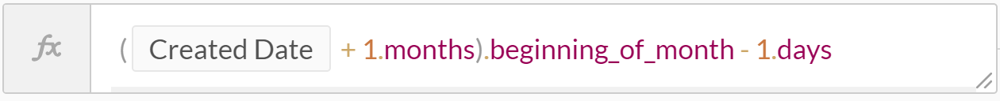
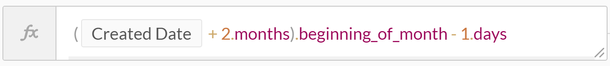

Date formulas
Workato supports a variety of date and datetime formulas. Formulas in Workato are whitelisted Ruby methods, and therefore not all Ruby methods are supported. You can always reach out to us to add additional formulas to the whitelist. Syntax and functionality for these formulas are generally unchanged. Take note that most formulas will return an error and stop the job if it tries to operate on nulls (expressed as nil in Ruby), except for present?, presence and blank?.
You can refer to the complete Ruby documentation for Time here.
Basics
now
Returns the current date and time that the action was carried out by Workato.
Example
In the following example, Workato carries out the action on on 2 April 2017, 12.30PM.
| Example | Result |
|---|---|
now |
"2017-04-02T12:30:00.000000-07:00" |
today
Returns the current date that the action was carried out by Workato.
Example
In the following example, Workato carries out the action on on 2 April 2017, 12.30PM.
| Example | Result |
|---|---|
today |
"2017-04-02" |
from_now
Produces a value that is forward in time from that point in time. Needs to be combined with \
Example
In the following example, Workato carries out the action on on 2 April 2017, 12.30PM.
| Example | Result |
|---|---|
3.days.from_now |
"2017-04-05T12:30:00.000000-07:00" |
4.days.from_now |
"2017-04-06T12:30:00.000000-07:00" |
3.minutes.from_now |
"2017-04-02T12:33:00.000000-07:00" |
ago
Produces a value that is backward in time from that point in time. Needs to be combined with \
Example
In the following example, Workato carries out the action on on 2 April 2017, 12.30PM.
| Example | Result |
|---|---|
3.days.ago |
"2017-03-31T12:30:00.000000-07:00" |
3.minutes.ago |
"2017-04-02T12:27:00.000000-07:00" |
wday
Returns day of the week (numbering starts with Monday = 1)
Example
| Example | Result |
|---|---|
"Tue, 12 July 2016".wday |
2 |
"Fri, 15 July 2016".wday |
5 |
yday
Returns the day number of the year
Example
| Example | Result |
|---|---|
"2017-01-01".yday |
1 |
"2017-02-01".yday |
32 |
yweek
Returns the week number of the year
| Example | Result |
|---|---|
"2017-01-01".yweek |
1 |
"2017-02-01".yweek |
5 |
Date arithmetics
We can make use of certain keywords such as days, months, years, minutes and seconds to perform date arithmetics to add or subtract days, months, years, minutes and seconds from dates and datetimes.
Example
| Date Arithmetic | Output |
|---|---|
'2015/04/20'.to_date + 2.days |
Wed, 22 Apr 2015 |
'2015/04/20'.to_date - 2.days |
Sat, 18 Apr 2015 |
'2015/04/20'.to_date + 2.months |
Sat, 20 Jun 2015 |
'2015/04/20'.to_date - 2.months |
Fri, 20 Feb 2015 |
'2015/04/20'.to_date + 2.years |
Thu, 20 Apr 2017 |
'2015/04/20'.to_date - 2.years |
Sat, 20 Apr 2013 |
Getting first/last days of the current and next month
Using a combination of date formulas, and date arithmetics, we can easily obtain the first and last days of the current and next months.
Beginning of current month
Firstly, turn on formula mode and we have access to the .beginning_of_month function. It returns the date for the start of the month for the given date/timestamp.

Beginning of Next Month
To retrieve a date for the beginning of the next month, we simply need to add a month to the input date, and use the previously mentioned function get the beginning of the month.

End of current or next month
While the beginning_of_month function will always give you the first day of the month, retrieving the end of the month is a little trickier because some months have 31 days while others have less.
Instead, we can apply some simple arithmetic to obtain the last date of the month.
To retrieve the last date of the current month:

To retrieve the last date of the next month:

Display conversion
strftime
To change the format of a datetime value to suit your preferences, you can use the .strftime formula to do so.
Example
| Example | Result |
|---|---|
"2017-06-05T17:13:27+00:00".strftime("%B %e, %I:%M%p") |
June 5, 5:13pm |
"2017-06-05T17:13:27+00:00".strftime("%A, %d %B %Y %k:%M") |
Monday, 05 June 2017 17:13 |
As shown above, each code (%B, %e, %I etc.) refers to a specific element of datetime. Static text and punctuation can also be added, such as commas (,), slashes (/), and colons (:). Here's a list of commonly used codes in Workato:
| Code | Meaning | Example (Using 2017-06-05T17:13:27.123+08:00) |
|---|---|---|
| %Y | Year with century | 2017 |
| %m | Month with zero-prefix | 06 |
| %B | Full month name | June |
| %b | Abbreviated month name | Jun |
| %d | Day of the month with zero-prefix | 05 |
| %e | Day of the month without zero-prefix | 5 |
| %H | Hour of the day (24-hour) | 17 |
| %k | Hour of day without 0 prefix (24-hour) | 17 |
| %I (capital i) | Hour of the day (12-hour) | 05 |
| %l (lowercase L) | Hour of day without 0 prefix (12-hour) | 5 |
| %p | AM or PM | PM |
| %M | Minute of the hour | 13 |
| %S | Second of the minute | 27 |
| %L | milliseconds of the minute | 123 |
| %z | Time zone offset from UTC | +0800 |
| %:z | Time zone formatted offset from UTC | +08:00 |
| %Z | Time zone abbrev. name | UTC |
| %A | Full day name | Monday |
To access the full list, check out the Ruby documentation
in_time_zone
Converts a time value to a different time zone. This function uses the list of time zone names from the IANA time zone database. The output will be an equivalent time in a different time zone. Find out more here
Refer to the following table for the timezone name to use in the formula.
| Region | Timezone to use in formula |
|---|---|
| International Date Line West | Pacific/Midway |
| Midway Island | Pacific/Midway |
| American Samoa | Pacific/Pago_Pago |
| Hawaii | Pacific/Honolulu |
| Alaska | America/Juneau |
| Pacific Time (US & Canada) | America/Los_Angeles |
| Tijuana | America/Tijuana |
| Mountain Time (US & Canada) | America/Denver |
| Arizona | America/Phoenix |
| Chihuahua | America/Chihuahua |
| Mazatlan | America/Mazatlan |
| Central Time (US & Canada) | America/Chicago |
| Saskatchewan | America/Regina |
| Guadalajara | America/Mexico_City |
| Mexico City | America/Mexico_City |
| Monterrey | America/Monterrey |
| Central America | America/Guatemala |
| Eastern Time (US & Canada) | America/New_York |
| Indiana (East) | America/Indiana/Indianapolis |
| Bogota | America/Bogota |
| Lima | America/Lima |
| Quito | America/Lima |
| Atlantic Time (Canada) | America/Halifax |
| Caracas | America/Caracas |
| La Paz | America/La_Paz |
| Santiago | America/Santiago |
| Newfoundland | America/St_Johns |
| Brasilia | America/Sao_Paulo |
| Buenos Aires | America/Argentina/Buenos_Aires |
| Montevideo | America/Montevideo |
| Georgetown | America/Guyana |
| Greenland | America/Godthab |
| Mid-Atlantic | Atlantic/South_Georgia |
| Azores | Atlantic/Azores |
| Cape Verde Is. | Atlantic/Cape_Verde |
| Dublin | Europe/Dublin |
| Edinburgh | Europe/London |
| Lisbon | Europe/Lisbon |
| London | Europe/London |
| Casablanca | Africa/Casablanca |
| Monrovia | Africa/Monrovia |
| UTC | Etc/UTC |
| Belgrade | Europe/Belgrade |
| Bratislava | Europe/Bratislava |
| Budapest | Europe/Budapest |
| Ljubljana | Europe/Ljubljana |
| Prague | Europe/Prague |
| Sarajevo | Europe/Sarajevo |
| Skopje | Europe/Skopje |
| Warsaw | Europe/Warsaw |
| Zagreb | Europe/Zagreb |
| Brussels | Europe/Brussels |
| Copenhagen | Europe/Copenhagen |
| Madrid | Europe/Madrid |
| Paris | Europe/Paris |
| Amsterdam | Europe/Amsterdam |
| Berlin | Europe/Berlin |
| Bern | Europe/Zurich |
| Zurich | Europe/Zurich |
| Rome | Europe/Rome |
| Stockholm | Europe/Stockholm |
| Vienna | Europe/Vienna |
| West Central Africa | Africa/Algiers |
| Bucharest | Europe/Bucharest |
| Cairo | Africa/Cairo |
| Helsinki | Europe/Helsinki |
| Kyiv | Europe/Kiev |
| Riga | Europe/Riga |
| Sofia | Europe/Sofia |
| Tallinn | Europe/Tallinn |
| Vilnius | Europe/Vilnius |
| Athens | Europe/Athens |
| Istanbul | Europe/Istanbul |
| Minsk | Europe/Minsk |
| Jerusalem | Asia/Jerusalem |
| Harare | Africa/Harare |
| Pretoria | Africa/Johannesburg |
| Kaliningrad | Europe/Kaliningrad |
| Moscow | Europe/Moscow |
| St. Petersburg | Europe/Moscow |
| Volgograd | Europe/Volgograd |
| Samara | Europe/Samara |
| Kuwait | Asia/Kuwait |
| Riyadh | Asia/Riyadh |
| Nairobi | Africa/Nairobi |
| Baghdad | Asia/Baghdad |
| Tehran | Asia/Tehran |
| Abu Dhabi | Asia/Muscat |
| Muscat | Asia/Muscat |
| Baku | Asia/Baku |
| Tbilisi | Asia/Tbilisi |
| Yerevan | Asia/Yerevan |
| Kabul | Asia/Kabul |
| Ekaterinburg | Asia/Yekaterinburg |
| Islamabad | Asia/Karachi |
| Karachi | Asia/Karachi |
| Tashkent | Asia/Tashkent |
| Chennai | Asia/Kolkata |
| Kolkata | Asia/Kolkata |
| Mumbai | Asia/Kolkata |
| New Delhi | Asia/Kolkata |
| Kathmandu | Asia/Kathmandu |
| Astana | Asia/Dhaka |
| Dhaka | Asia/Dhaka |
| Sri Jayawardenepura | Asia/Colombo |
| Almaty | Asia/Almaty |
| Novosibirsk | Asia/Novosibirsk |
| Rangoon | Asia/Rangoon |
| Bangkok | Asia/Bangkok |
| Hanoi | Asia/Bangkok |
| Jakarta | Asia/Jakarta |
| Krasnoyarsk | Asia/Krasnoyarsk |
| Beijing | Asia/Shanghai |
| Chongqing | Asia/Chongqing |
| Hong Kong | Asia/Hong_Kong |
| Urumqi | Asia/Urumqi |
| Kuala Lumpur | Asia/Kuala_Lumpur |
| Singapore | Asia/Singapore |
| Taipei | Asia/Taipei |
| Perth | Australia/Perth |
| Irkutsk | Asia/Irkutsk |
| Ulaanbaatar | Asia/Ulaanbaatar |
| Seoul | Asia/Seoul |
| Osaka | Asia/Tokyo |
| Sapporo | Asia/Tokyo |
| Tokyo | Asia/Tokyo |
| Yakutsk | Asia/Yakutsk |
| Darwin | Australia/Darwin |
| Adelaide | Australia/Adelaide |
| Canberra | Australia/Melbourne |
| Melbourne | Australia/Melbourne |
| Sydney | Australia/Sydney |
| Brisbane | Australia/Brisbane |
| Hobart | Australia/Hobart |
| Vladivostok | Asia/Vladivostok |
| Guam | Pacific/Guam |
| Port Moresby | Pacific/Port_Moresby |
| Magadan | Asia/Magadan |
| Srednekolymsk | Asia/Srednekolymsk |
| Solomon Is. | Pacific/Guadalcanal |
| New Caledonia | Pacific/Noumea |
| Fiji | Pacific/Fiji |
| Kamchatka | Asia/Kamchatka |
| Marshall Is. | Pacific/Majuro |
| Auckland | Pacific/Auckland |
| Wellington | Pacific/Auckland |
| Nuku'alofa | Pacific/Tongatapu |
| Tokelau Is. | Pacific/Fakaofo |
| Chatham Is. | Pacific/Chatham |
| Samoa | Pacific/Apia |
Example
| Example | Result |
|---|---|
"2017-05-31T12:30:45.303136-07:00".in_time_zone(\"America/New_York\") |
"2017-05-31T15:30:45.303136-04:00" |
"2017-01-30".in_time_zone(\"America/New_York\") #Note: dates with no timezones take the timezone defined in your Workato account settings |
"2017-01-30T00:00:00.000000-05:00" |
Converting datetime to date
To convert a date data type into a datetime data, or vice versa, use the to_date or to_time formulas.
to_date
This function converts a value in another data type, e.g. time or string, into a date data type. By default, the format of the date returned will be YYYY-MM-DD.
You can specify the format of the date returned via an additional parameter format.
Example
| Example | Result |
|---|---|
"2017-04-02".to_date |
"2017-04-02" |
"2017-04-02T12:30:30.462659-07:00".to_date |
"2017-04-02" |
to_time
This function converts a value in another data type, e.g. date or string, into a date data type. Dates will be represented in UTC offset (i.e. expressed in GMT timezone of +00:00).
If a datetime is coverted using the to_time formula, it will be expressed in UTC offset. If a date is converted using the to_time formula, it will take the time of 00:00:00.000000 (i.e. midnight sharp), expressed in UTC offset.
Example
| Example | Result |
|---|---|
"2017-04-02T12:30:30.462659-07:00".to_time |
"2017-04-02T19:30:30.462659+00:00" |
"2017-04-02".to_time |
"2017-04-02T00:00:00.000000+00:00" |
Conditionals
blank?
This function checks the input string and returns true if it is an empty string or if it is null.
Example
| Example | Result |
|---|---|
"2017-04-02T12:30:30.462659-07:00".blank? |
false |
"2017-04-03".blank? |
false |
" ".blank? |
true |
null.blank? |
true |
present?
This function will check the input, returning true if there is a value present. If input is null or an empty string, formula returns false.
Example
| Example | Result |
|---|---|
"2017-04-02T12:30:30.462659-07:00".present? |
true |
"2017-04-03".present? |
true |
" ".present? |
false |
null.present? |
false |
presence
This function will check the input, returning its value if there is one present, else returning nil.
Example
| Example | Result |
|---|---|
"2017-04-02T12:30:30.462659-07:00".presence |
"2017-04-02T12:30:30.462659-07:00" |
"2017-04-03".presence |
"2017-04-03" |
" ".presence |
nil |
null.presence |
nil |